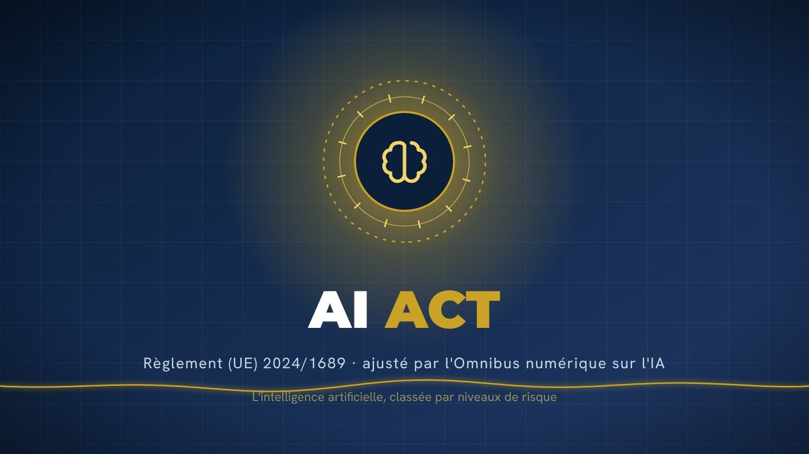

ARG
ARGARGOS › La réglementation en 4 minutes › Règlement sur l'IA
Règlement sur l'IA en 4 minutes: Belgique : application directe, loi en attente
Le règlement sur l'IA, ajusté par l'Omnibus numérique, classe l'intelligence artificielle par niveaux de risque. La classification décide de tout. Selon la finalité, pas la technologie. En Belgique, le règlement s'applique directement, mais la loi manque.

- 0:00Décisions invisibles
- 0:13Les amendes
- 0:26Au niveau national
- 0:52AI Act
- 1:05Quatre niveaux
- 1:27Haut risque
- 1:45Dates
- 2:07Europe
- 2:25Autorités
- 2:43Que faire
Points clés
- 35 M€ ou 7 % du chiffre d'affaires mondial
- 2.8.2026 application générale et transparence
- 2.12.2026 fin du délai de grâce pour le marquage
- 2.12.2027 haut risque de l'annexe III
- 2.8.2028 IA intégrée aux produits réglementés (annexe I)
- IBPT Autorité annoncée
- Loi manquante Désignation et sanctions
- APD Agit déjà par le RGPD
Transcription
Texte complet de la voix off
0:00 · Décisions invisibles
Un algorithme écarte ton CV. Un autre décide de ton crédit. Un autre reconnaît ton visage à l'aéroport. Personne ne te l'a expliqué. Désormais, quelqu'un devra le faire.
0:13 · Les amendes
Le règlement européen sur l'IA prévoit des amendes jusqu'à trente-cinq millions d'euros, ou sept pour cent du chiffre d'affaires mondial. Depuis août 2026 : signaler l'IA et former les équipes. Chaque pays organise sa surveillance.
0:26 · Au niveau national
En Belgique, le règlement s'applique directement, mais la loi manque. Le gouvernement a annoncé l'IBPT comme autorité principale. La loi qui le désigne et fixe les sanctions n'est pas encore là. L'APD peut déjà agir par le RGPD. La convention collective 39 impose d'informer et de concerter sur les nouvelles technologies. Et qui change la finalité d'un système en devient le fournisseur.
0:52 · AI Act
Le règlement sur l'IA, ajusté par l'Omnibus numérique, classe l'intelligence artificielle par niveaux de risque. La classification décide de tout. Selon la finalité, pas la technologie.
1:05 · Quatre niveaux
Quatre niveaux. Inacceptable : interdit, comme la notation sociale. Haut risque : emploi, crédit, éducation, biométrie. Transparence : signaler l'IA et marquer les contenus synthétiques. Et risque minimal, la plupart des usages en entreprise. Pour tous, l'obligation de maîtrise de l'IA.
1:27 · Haut risque
Le haut risque exige un système de gestion complet. La gestion des risques sur tout le cycle de vie. Des données représentatives, sans biais. La documentation et la journalisation. Et le contrôle humain, la robustesse et la cybersécurité. Articles 9 à 15 du règlement.
1:45 · Dates
Les dates, après l'Omnibus. 2 août 2026 : application générale et transparence. 2 décembre 2026 : fin du délai de grâce pour le marquage. 2 décembre 2027 : le haut risque de l'annexe trois. Et 2 août 2028 : l'IA intégrée aux produits réglementés.
2:07 · Europe
En Europe, chaque pays avance à son rythme. L'Allemagne a sa loi en vigueur. L'Italie aussi. Le Danemark a été le premier à légiférer. Les Pays-Bas consultent leur projet. La France en débat au Parlement. Et l'Espagne, le Portugal et la Belgique attendent encore leur loi.
2:25 · Autorités
En Belgique, plusieurs acteurs entrent en jeu : l'IBPT, annoncé comme autorité principale. Le SPF Économie assure la coordination. L'APD et l'Organe de contrôle de l'information policière veillent sur leurs domaines. Et les sanctions nationales viendront avec la loi.
2:43 · Que faire
Que faire maintenant. Inventorier et classer les systèmes, assurer la transparence, former et informer le personnel. ARGOS le prouve : journaux, contrôle humain et verdicts traçables, avec une IA qui tourne en local. Règlement IA : l'IA propose, l'humain décide.
Questions fréquentes
Qu’est-ce que Règlement sur l'IA ?
Le règlement sur l'IA, ajusté par l'Omnibus numérique, classe l'intelligence artificielle par niveaux de risque. La classification décide de tout. Selon la finalité, pas la technologie. Le règlement européen sur l'IA prévoit des amendes jusqu'à trente-cinq millions d'euros, ou sept pour cent du chiffre d'affaires mondial. Depuis août 2026 : signaler l'IA et former les équipes. Chaque pays organise sa surveillance.
Qu’exige Règlement sur l'IA ?
Quatre niveaux. Inacceptable : interdit, comme la notation sociale. Haut risque : emploi, crédit, éducation, biométrie. Transparence : signaler l'IA et marquer les contenus synthétiques. Et risque minimal, la plupart des usages en entreprise. Pour tous, l'obligation de maîtrise de l'IA.
Quelles sont les dates clés ?
Les dates, après l'Omnibus. 2 août 2026 : application générale et transparence. 2 décembre 2026 : fin du délai de grâce pour le marquage. 2 décembre 2027 : le haut risque de l'annexe trois. Et 2 août 2028 : l'IA intégrée aux produits réglementés.
Quelle est la situation en Belgique ?
En Belgique, le règlement s'applique directement, mais la loi manque. Le gouvernement a annoncé l'IBPT comme autorité principale. La loi qui le désigne et fixe les sanctions n'est pas encore là. L'APD peut déjà agir par le RGPD. La convention collective 39 impose d'informer et de concerter sur les nouvelles technologies. Et qui change la finalité d'un système en devient le fournisseur. En Belgique, plusieurs acteurs entrent en jeu : l'IBPT, annoncé comme autorité principale. Le SPF Économie assure la coordination. L'APD et l'Organe de contrôle de l'information policière veillent sur leurs domaines. Et les sanctions nationales viendront avec la loi.
Que doit faire une entreprise dès maintenant ?
Que faire maintenant. Inventorier et classer les systèmes, assurer la transparence, former et informer le personnel. ARGOS le prouve : journaux, contrôle humain et verdicts traçables, avec une IA qui tourne en local. Règlement IA : l'IA propose, l'humain décide.
Sources officielles
- Règlement (UE) 2024/1689 (AI Act) (EUR-Lex)
- Règlement (UE) 2026/1744 (EUR-Lex)
- Fiches réglementaires de Software in a Box
À voir aussi
 NIS2
NIS2NIS2 en 4 minutes: Belgique : le bon élève
 Data Act et DGA
Data Act et DGAData Act et DGA en 4 minutes: Belgique : l'autorité se prépare
 CyFun et ISO
CyFun et ISOCyFun et ISO en 4 minutes: Une preuve n'est pas un formulaire
Voix et musique générées par intelligence artificielle (art. 50 du règlement sur l’IA). Information générale, pas un conseil juridique ; situation à novembre 2026, d’après les fiches réglementaires de Software in a Box. Clips vidéo sous licence Envato.
Pour intégrer cette présentation sur un autre site : <iframe src="https://argos.softwareinabox.eu/fr-be/reglementation/reglement-ia/presentacion/?embed=1" width="960" height="540" allow="autoplay; fullscreen" title="Règlement sur l'IA en 4 minutes: Belgique : application directe, loi en attente"></iframe> avec un lien vers cette page.
Aussi disponible en: EspañolDeutschFrançaisItalianoNederlandsNederlands (België)PortuguêsDansk